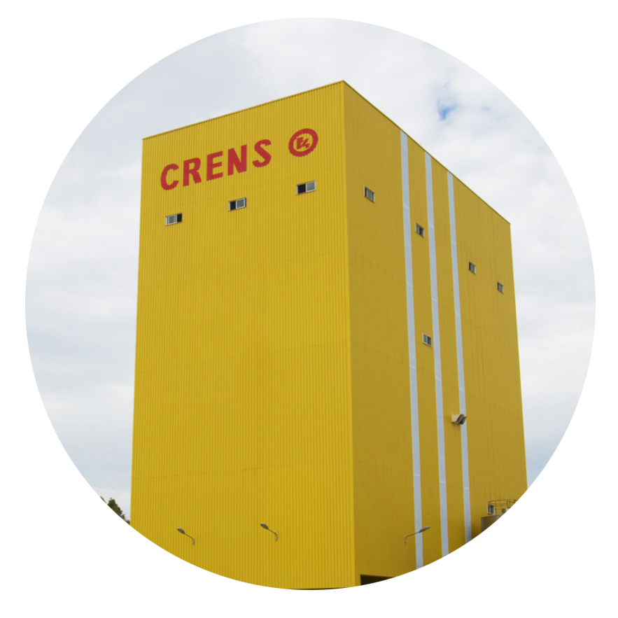
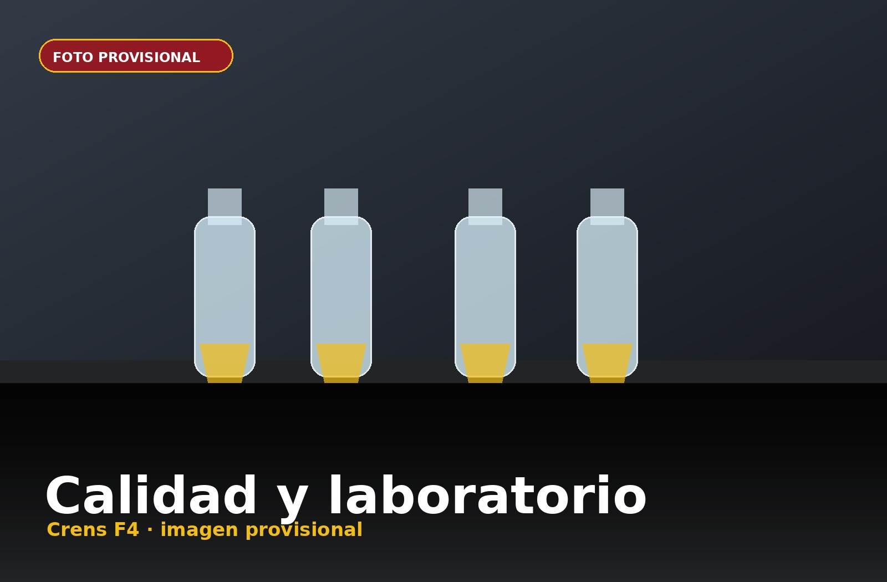

Avicultura
Piensos para broilers, ponedoras y reproductoras, adaptados a cada fase productiva.
Ver gama →
Fabricamos piensos compuestos con control, experiencia y capacidad logística para responder a las necesidades reales de cada explotación.
Una empresa familiar con vocación industrial, centrada en fabricar piensos fiables y en acompañar al cliente con cercanía.
Control directo del proceso productivo.
Materias primas, formulación y trazabilidad.
Servicio preparado para responder con agilidad.
Piensos para avicultura, porcino, bovino, ovino, caprino y equino.
Cada especie exige una alimentación específica. Por eso estructuramos nuestra gama por necesidades productivas, fases y tipo de explotación.
 Foto provisional
Foto provisional Foto provisional
Foto provisionalPiensos para broilers, ponedoras y reproductoras, adaptados a cada fase productiva.
Ver gama → Foto provisional
Foto provisionalSoluciones para destete, precebo, cebo y reproductoras, orientadas a rendimiento y regularidad.
Ver gama → Foto provisional
Foto provisionalNutrición para vacuno de carne y leche, con formulaciones equilibradas y fiables.
Ver gama → Foto provisional
Foto provisionalPiensos y mezclas para explotaciones de ovino, ajustadas a necesidades de mantenimiento y producción.
Ver gama → Foto provisional
Foto provisionalNutrición para caprino con especial atención a digestibilidad, sanidad y rendimiento.
Ver gama → Foto provisional
Foto provisionalPiensos para caballos diseñados para aportar energía, fibra y equilibrio nutricional.
Ver gama →Una forma de trabajar clara: seleccionar, formular, fabricar, controlar y entregar.

Foto provisionalLa calidad empieza en la recepción de materias primas y continúa durante la formulación, fabricación y expedición del pienso.
Conocer el procesoLa logística forma parte del valor del pienso: preparar, cargar y entregar en el momento adecuado.
Ver logística Foto provisional
Foto provisionalLa historia de Crens F4 es la historia de una empresa familiar que ha evolucionado con el sector agropecuario de Utrera.
Ver historiaEstamos a su disposición para atenderle.